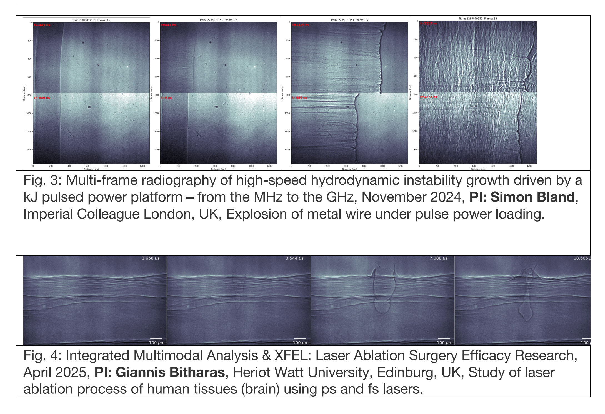
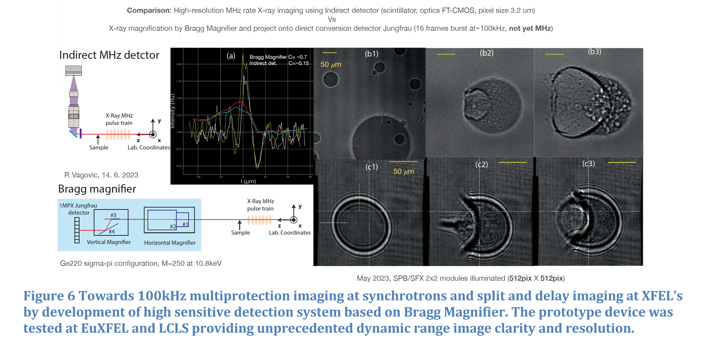
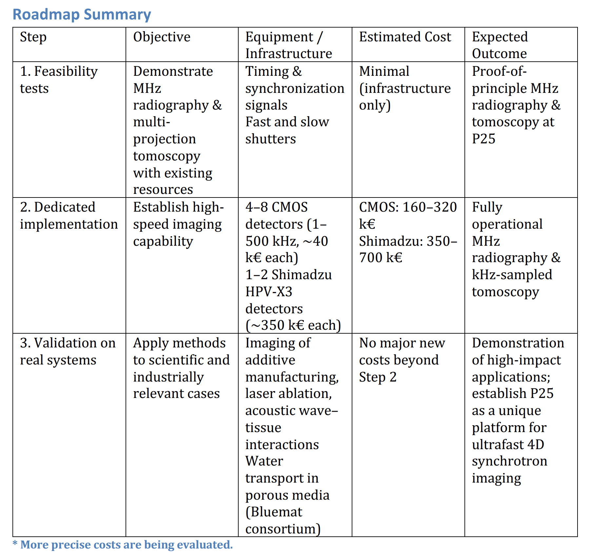

Project Pipeline
X-Pulse
X-ray Probing of Ultrafast Events
Our mission is to push boundaries of advanced X-ray pulse resolved imaging at large scale X-ray infrastructures.
We have pioneered this field through early proof-of-principle MHz radiography with phase contrast (XPCI) experiments at ESRF ID19 and through development of MHz X-ray radiography with phase contrast at the European XFEL. The methodology was used for several inhouse and user beamtimes at European XFEL.
We coordinated user and collaborator campaigns in materials research and biomedical applications, including imaging of processes in human tissues under focused ultrasound. Several new beamtime applications were submitted to EuXFEL for high-resolution MHz XPCI/holography and MHz Tomoscopy including fusion-research applications.
Examples of MHz radiography were performed in a pulse-synchronized manner at a 1.128 MHz frame rate (current camera limitation). The field of view was 1.28 mm x 0.8 mm with an effective pixel size of 3.2 um.

In parallel, we proposed various splitting schemes explored via R&C InVision and invented a practical multi-beam X-ray splitting concept patented with DESY, EuXFEL and Tohoku University. Based on this idea we obtained the EIC-Pathfinder Open project "MHz Tomoscopy".
First successful feasibility tests with two projections were performed at European XFEL and ESRF ID19. Through EIC Pathfinder funding, we constructed and validated a MHz multi-view imaging prototype for vertical scattering geometry with four simultaneous projections.
Recent tests at European XFEL and ID19 confirmed that tomoscopy can be performed in realistic beamline conditions and extended into next-generation ultrafast workflows.
New Developments
To extend these capabilities, we are advancing highly sensitive detection concepts using Bragg Magnifiers combined with integrating detectors. Feasibility tests of pulse-resolved X-ray holography at European XFEL and LCLS demonstrated major improvements in dynamic range.
We are building a prototype Bragg Magnifier module for integration into MHz tomoscopy setups. This enables split-and-delay imaging in the 50-200 ps regime at XFELs and high-efficiency synchrotron detection with sampling potential up to about 100 kHz.

Implementation At P25 White Beam Hutch
The P25 beamline offers a strong environment for next-generation synchrotron ultrafast imaging. Our implementation strategy is staged from feasibility tests and infrastructure integration to dedicated multi-projection tomoscopy and MHz radiography deployment.
Validation on real systems targets additive manufacturing, laser ablation and shock phenomena, acoustic interactions with biological tissues, and propagation of water through porous media. This staged approach bridges feasibility, implementation, and scientific validation.
